La curiosité avant le métier
Deb a grandi à Jamshedpur. La cuisine n’était pas au centre de la vie de famille. Son grand-père cuisinait et lui a laissé quelques premiers souvenirs, mais l’obsession s’est construite toute seule : à vélo sur le chemin des cours particuliers, en mettant discrètement de côté (ou en chapardant) un peu d’argent de poche, et en s’arrêtant pour un chaat, un bhel puri, un dosa ou tout ce qu’il avait envie de goûter cette semaine-là.
Ce n’a jamais été la nostalgie d’une seule cuisine régionale. C’était, dès le départ, une curiosité pour toutes.
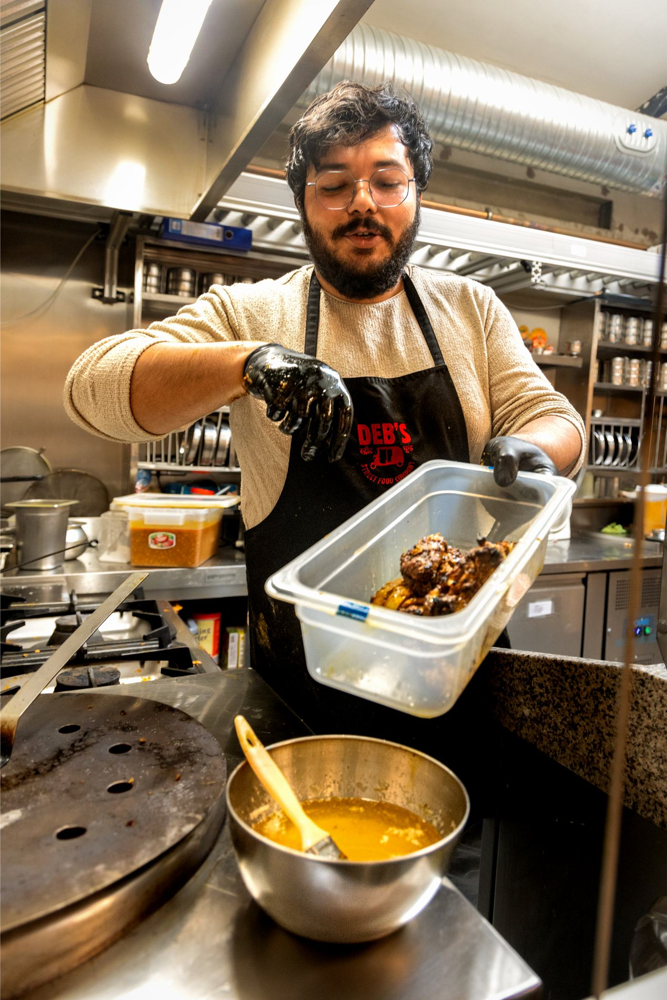
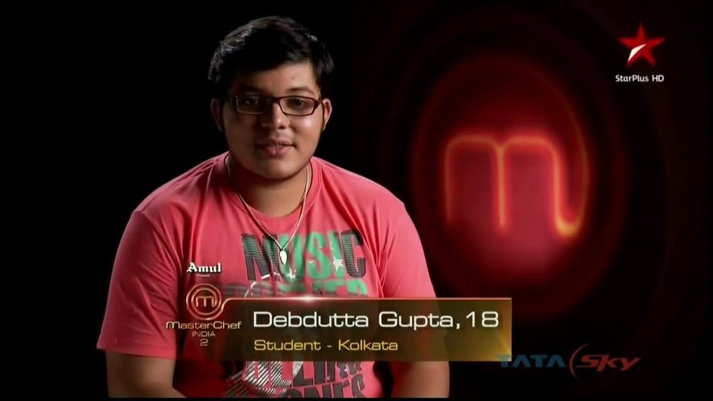
MasterChef India, saison 2
Alors qu’il est encore élève, Deb participe à la saison 2 de MasterChef India. C’est son premier vrai contact avec le monde de la cuisine professionnelle, et avec des chefs comme Vikas Khanna et Kunal Kapur.
L’émission n’a pas fait de lui un chef. Elle lui a ouvert la porte de l’univers professionnel de la cuisine, et elle a convaincu sa famille et son entourage que cuisiner pouvait être un vrai métier.
Les fondations professionnelles
IHM Chennai
C’est là que se sont forgées la discipline, l’endurance et la rigueur.
Haaga-Helia University of Applied Sciences, Finlande
Une expérience d’études à l’international.
Université de Stavanger, Norvège
Une expérience d’études à l’international.
Institut Paul Bocuse, Lyon (aujourd’hui Institut Lyfe)
Culinary Leadership & Innovation.
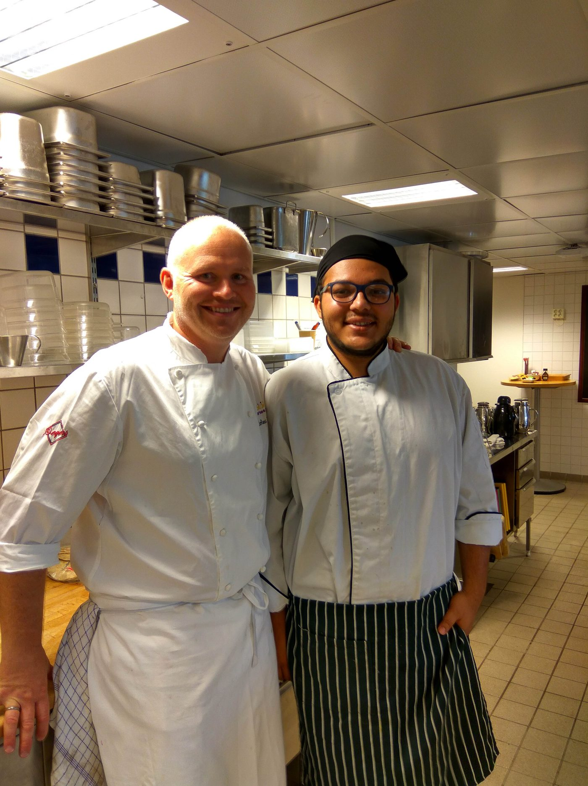
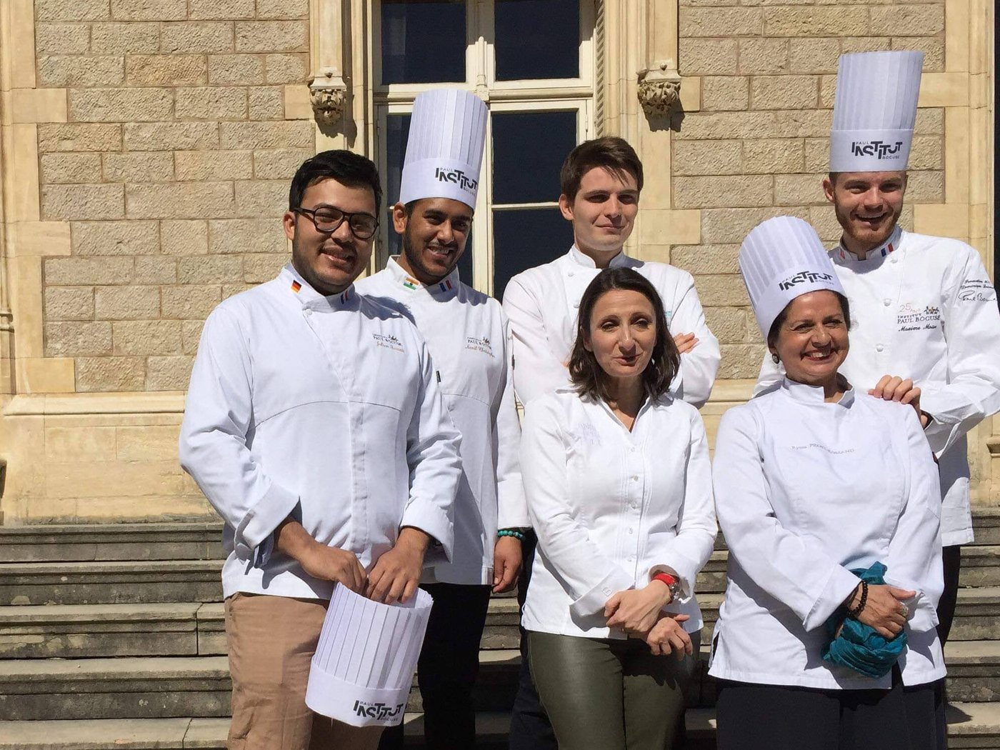
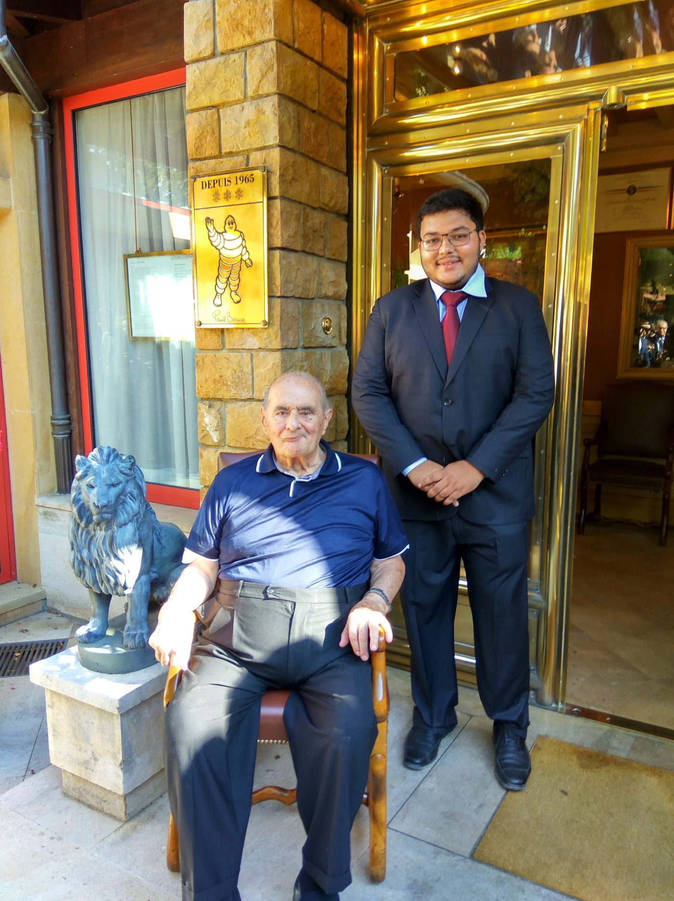
Avant le restaurant, une question de recherche
Le mémoire de master de Deb portait sur la perception et l’acceptation de la cuisine indienne par les consommateurs français. Il a d’abord étudié les a priori nés des codes familiers du restaurant de curry. Puis, dans son premier projet professionnel, il a proposé pendant 53 semaines 53 menus régionaux indiens différents, et comparé ensuite la façon dont les clients percevaient la cuisine.
Un paturi enveloppé dans une feuille de bananier pouvait être perçu comme une cuisine tropicale ou insulaire, alors que le butter chicken était immédiatement identifié comme indien. Cette recherche fait désormais partie de la logique de Deb’s Bistro : élargir la compréhension de la cuisine indienne, sans la rendre moins indienne.
Les Food Trails de Deb
« Une recette peut vous dire comment cuisiner un plat. Elle ne peut pas vous dire quel goût il doit avoir. »
Deb consacre environ un mois par an à voyager et à faire de la recherche culinaire en Inde, de village en ville, en train, en voiture et à moto, avec des amis, sur les conseils des gens du coin, ou simplement avec les personnes qu’il rencontre en chemin.
La recherche va au-delà de la recette : le climat, l’histoire, la culture, la nutrition, la saisonnalité, l’environnement, les accompagnements, la structure du repas, et la raison pour laquelle on mange de telle façon à tel endroit.
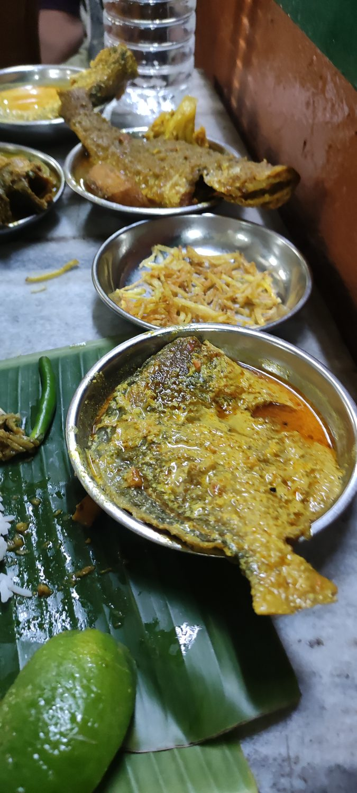
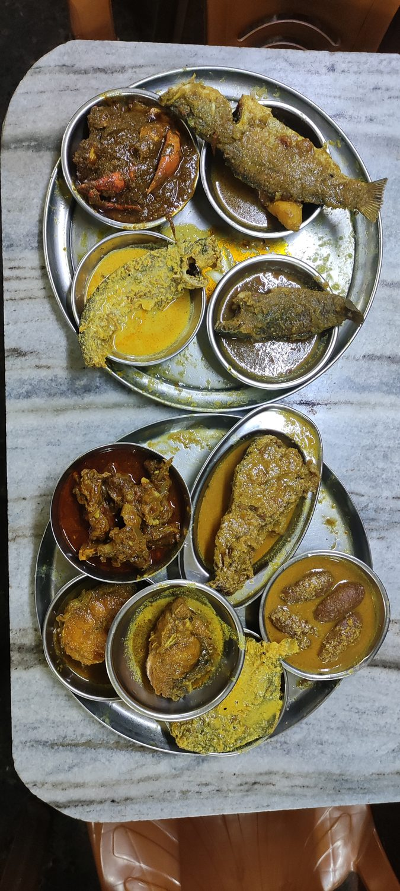
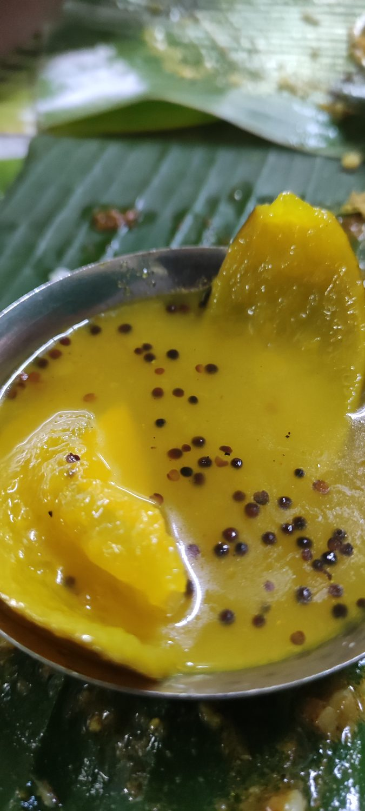
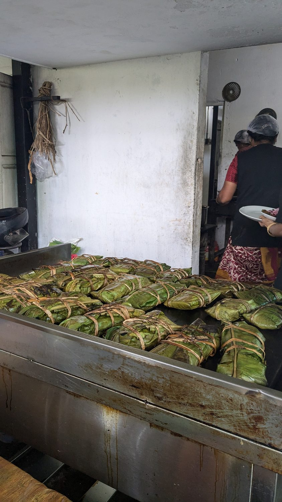
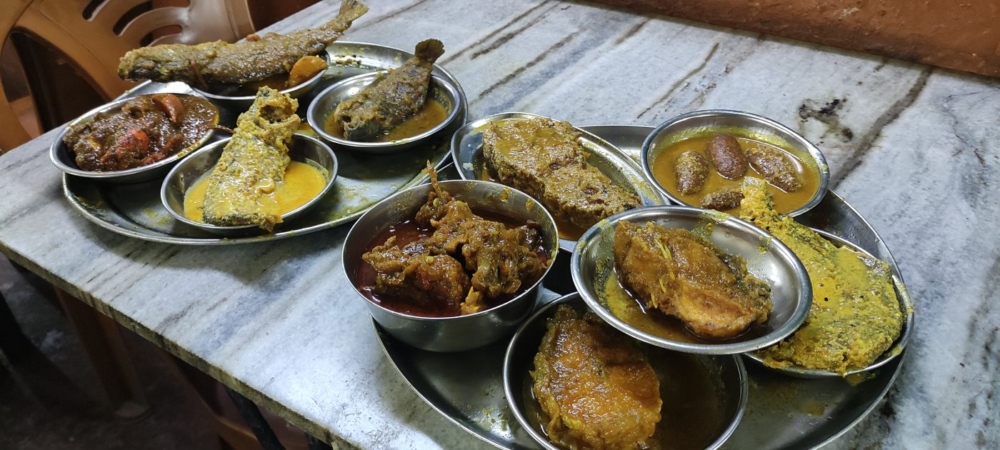
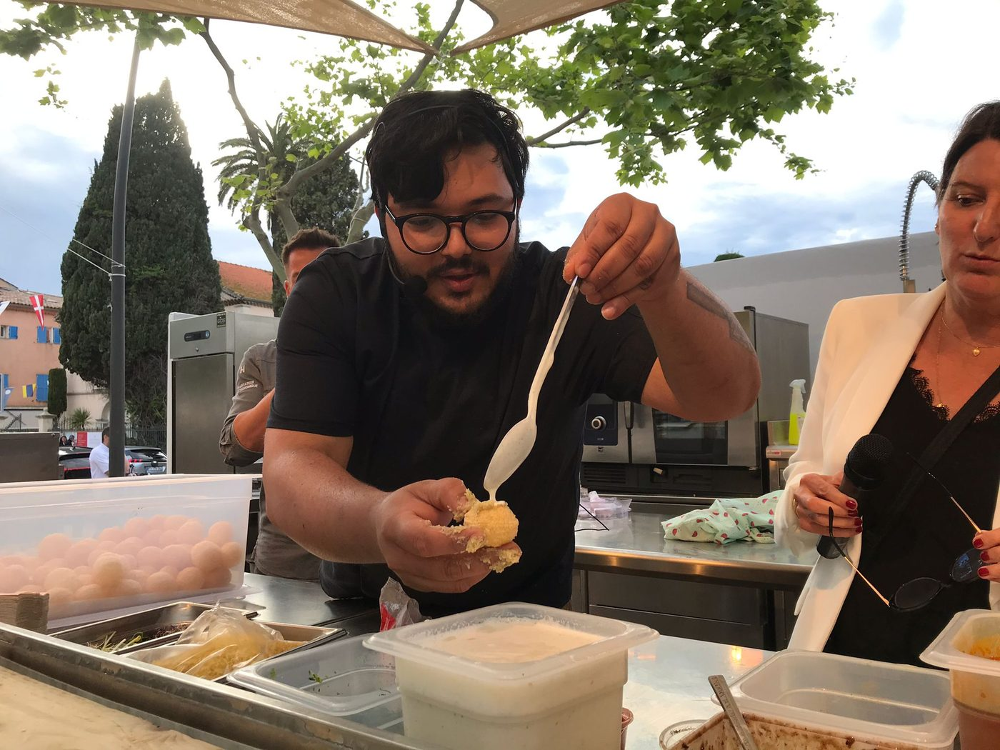
L’ouverture de Deb’s, 2019
Deb a ouvert Deb’s Bistro à Lyon à 26 ans, avec très peu d’argent, sans voiture, sans réseau familial dans les affaires et sans soutien local sur lequel s’appuyer. Il rapportait ses achats de chez Metro et Promocash à vélo, avec une petite remorque. Le restaurant a démarré avec des cartes régionales ambitieuses, qui changeaient régulièrement.
les débuts de Deb’s, le vélo et la remorque
Cooking with Deb, les marchés, la période de réouverture
Pandémie, communauté, reconstruction
Quelques mois après l’ouverture, la pandémie a contraint les restaurants à fermer. Deb a cessé de se verser un salaire et est rentré en Inde, en partie pour réduire ses dépenses. Il a créé les sessions du week-end « Cooking with Deb » : les participants achetaient les ingrédients à l’avance, cuisinaient avec lui à distance et mangeaient ensemble.
Plus tard, des occasions sur les marchés lyonnais ont aidé le restaurant à retrouver de la visibilité. Les premiers articles et avis étaient arrivés juste avant la fermeture, notamment dans Le Progrès et Lyon Tribune, mais l’élan habituel d’un lancement était perdu. La réouverture est devenue une lente reconstruction, portée par la communauté.
Une adresse que l’on choisit
Deb’s n’est pas installé dans un emplacement de premier choix, avec beaucoup de passage. La plupart des clients viennent exprès, après avoir réservé. Aujourd’hui, la communauté réunit des habitués lyonnais, des Indiens vivant en France à la recherche d’une cuisine régionale, des Français qui ont voyagé ou travaillé en Inde et à qui certaines saveurs manquent, et des personnes qui amènent leurs amis ou leur famille découvrir une culture culinaire indienne plus large.
Pour certains clients, Deb’s est une découverte de l’Inde. Pour d’autres, c’est un goût qu’ils cherchaient à retrouver.
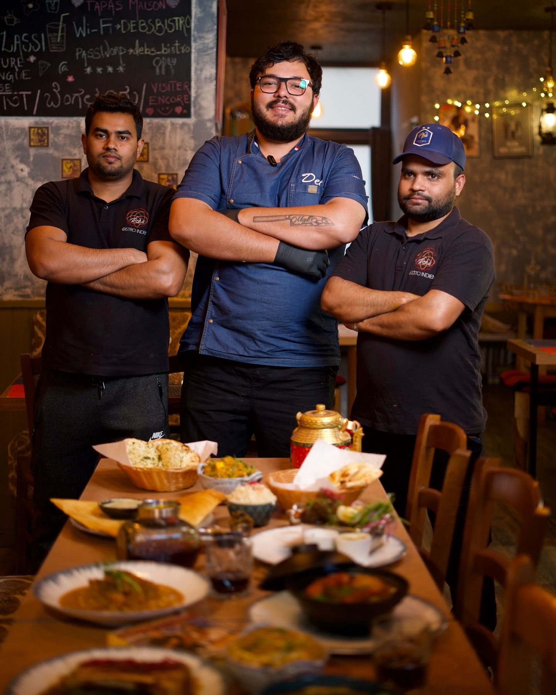
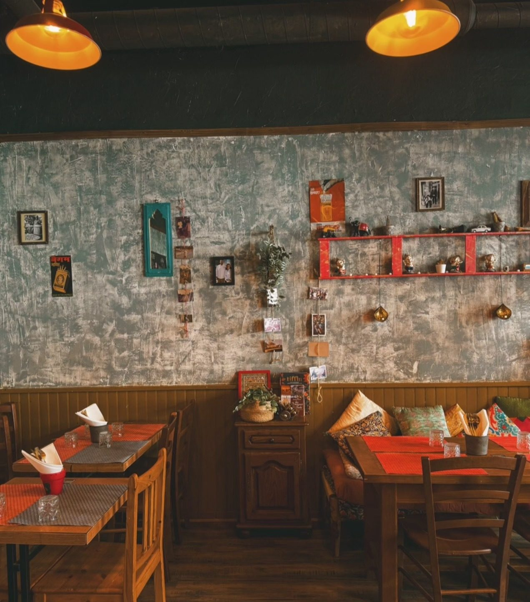
De Lyon à Paris
Après Deb’s Bistro à Lyon sont venus Deb’s Street Food à Paris, puis Gully, Indian Street Kitchen. Gully est l’évolution du chapitre street food parisien.